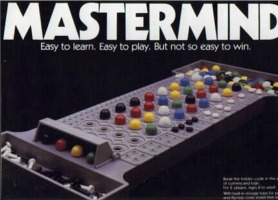
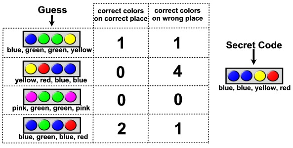

Master Mind was invented around 1970/71 by Mordecai Meirowitz, an Israeli Postmaster/Telecommunications expert. His idea was at first turned down by many of the leading toy companies, but he persisted, and took it to the International Toy Fair at Nuremberg in February 1971, where he showed it to a small English company, Invicta Plastics Ltd. The small Leicester based company bought up the entire intellectual property rights to the game, and under the guidance of its founder Mr. Edward Jones-Fenleigh, refined it, and released it in 1971/72. It was an immediate hit, and went on to win the first ever Game of the Year Award in 1973. It also received a Design Centre Award, and the Queen's Award for Export Achievement. So, for sure you have heard about this game, right?
Its idea is simple: you have to break the secret color code combination that is a sequence of a number of colored pegs. You make guesses and receive feedback about your guesses, namely, the number of correct colors on correct places, and the number of correct colors on wrong places. For example, imagine a game with 9 colors and 4 positions. Let's say that the secret code is blue, blue, yellow, red. At the start you don't know what the code is and you make a guess: blue, green, green, yellow. The info you would receive would be that you have 1 correct color in the correct position (the first blue peg) and one correct color on a wrong place (the yellow peg, which is not on the correct position). See figure 1 to better understand this idea. The objective of the game is to guess the secret code, using as few guesses as possible.

Figure 1 - Explanation of a guess feedback
We are interested in a particular property of this game. Knowing a guess and its feedback, how many combinations of colors are consistent with the answer? For example, imagine a game with 9 colors and 3 positions. We make the guess blue, red, green and receive the info 1 correct color on correct place and 2 correct colors on wrong places. How many combinations are consistent whit this? In other words, how many possible secret codes are there that would give this answer? In this case, there are exactly 3 secret codes with this feedback for this particular guess: code 1 - blue, green, red; code 2 - green, red, blue and code 3 - red, blue, green. Your task is precisely to discover this kind of numbers.
Given a guess and its feedback, your task is to write how many secret codes are consistent with that info. In this particular problem we will only be interested in 9 color mastermind games, with 2 to 5 positions. In order to simplify, we will represent colors as numbers, starting with 1 and ending with 9. Blue will be number 1, red will be 2 and so on (note that it does not matter which color is assigned to each number; the important thing is that a different number represents a different color).
The first line of input will contain a single integer N, indicating the number of test cases that follow (1 ≤ N ≤ 30).
Then follow exactly N lines, each containing one test case consisting of three parts separated by single spaces. Each case starts with a valid guess, in a form of a string of digits (remember that the colors are coded with digits 1 to 9). This string can have from 2 to 5 digits. Then follows the feedback received in the form of two integer numbers: the first one represents the number of correct colors on correct places, and the second one represents the number of correct colors on wrong places.
For each test case you must output a line containing a single integer representing the number of possible secret codes that would give that feedback for that particular guess. Remember that there are always 9 different colors and that the size of the secret code must be equal to the size of the guess.
5 1234 2 2 111 1 0 567 0 1 91543 5 0 91543 0 5
6 192 234 1 44
2005 Programming Contest of Porto University
Round 2, 28 of September of 2005
(Author: Pedro Ribeiro - DCC/FCUP)